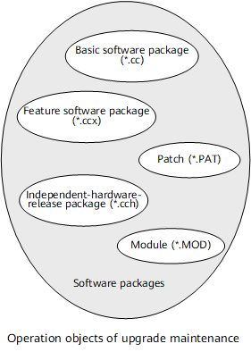

Understanding Upgrade Maintenance
Upgrade maintenance is performed on software packages. Involved operations include software package upgrade, installation, uninstallation, and rollback. You can upgrade a software package in two modes: performing the upgrade on an in-service device or specifying a software package that takes effect at the next startup. In both modes, you need to obtain a new software package and upload it.
Software Package Composition
- Basic software package: It is a software package that provides basic system functionality. Specifically, it ensures the running of components and services by providing hardware drivers, common components, an operating system, a boot file, etc. A basic software package is used in initial deployment and software upgrade scenarios, and is the basis for the running of components and services, supporting an entire device.
- Feature software package: It is a software package that provides component-based service capabilities for specific valuable features based on a basic software package.There are two types of feature software packages:
- Integrated feature software package: a feature package that is integrated in and released with a basic software package. This type of package does not need to be separately obtained or uploaded. An integrated feature software package is generally developed for basic functions, such as independent upgrade and independent evolution.
- Independent feature software package: a feature package that is independently released and whose functions are not integrated in a basic software package. One feature corresponds to one package, which needs to be obtained and uploaded separately. An independent feature software package is generally security-sensitive and developed for functions such as component decoupling, fault isolation, and permission minimization. It enables a device to support new features without requiring the basic software package to be upgraded. In addition, it can be loaded, uninstalled, and upgraded independently without interrupting services.
Unless otherwise specified, feature software packages mentioned in the upgrade maintenance sections refer to independent feature software packages. This also applies to Configuring a Feature Software Package.
- Independent-hardware-release package: It provides extended system software developed to implement plug-and-play of new hardware. It allows independent release of hardware. After an independent-hardware-release package is installed, the device that uses the basic software package of an earlier version can use the hardware of the new version.
- Patch: It is an independent file released to rectify certain defects in the system software, such as to fix bugs or vulnerabilities. If a software problem is found during product maintenance and the involved software package cannot be replaced or upgraded to solve the problem, you can install a patch as a solution.
- Module: It is a functional patch generated as a *.MOD file. A module file uses the patch mechanism to implement specific functions. It is generally released as an extended package of the basic software package and is used to add major functions to the current basic software package.Figure 1 Software package composition


When you install or upgrade a software package, enable log and alarm management functions to record all installation or upgrade operations. The recorded information helps you analyze and locate faults if the installation or upgrade fails.
Basic Upgrade Maintenance Operations
Basic upgrade maintenance operations include:
- Software package upgrade: If the current system software cannot meet the live network or user service requirements, you can upgrade the system software to a later version using a software package.A software package upgrade can be performed in either of the following ways:
- Specifying the software package that takes effect at the next startup: You can specify the name of a new software package that takes effect at the next startup. After the device is restarted, the system automatically uses the new software package to upgrade the device. In this case, services are interrupted, affecting service forwarding reliability. In this case, services are interrupted, affecting service forwarding reliability.
- In-service software package upgrade: You can upgrade a device without restarting it. This approach reduces the service interruption time and ensures service forwarding reliability.
- Software package installation: You can install a software package on a device so that the device runs the system software.Software package installation can be performed in either of the following ways:
- Startup installation: To install a basic software package, you must restart the device. In this case, services are interrupted, affecting device reliability.
- In-service installation: You can install a software package without restarting the device.
- Software package uninstallation: If a software package is no longer required, you can uninstall it.
- Software package rollback: If the post-upgrade system software cannot meet user service requirements or services cannot run properly, you can roll back the system software to the source version to ensure normal service forwarding.
"In-service" in the upgrade maintenance sections indicates that the device does not need to be restarted.
Basic Functions Supported by Software Packages
Based on software package types, the following basic functions are supported:
- Basic software package (*.cc): It can be installed only during device startup and can be upgraded. It cannot be installed or uninstalled on an in-service device.
- Feature software package (*.ccx): It can be installed, uninstalled, or upgraded on an in-service device, can be rolled back, and can also be specified to take effect at the next startup. It enables the rollout and upgrade of new device features.
- Independent-hardware-release package (*.cch): Independent-hardware-release packages can be installed, uninstalled, or upgraded on an in-service device, can be rolled back, and can also be specified to take effect at the next startup. It enables the rollout and upgrade of new hardware of a device.
- Patch (*.PAT): It can be installed and uninstalled on an in-service device, can be rolled back, and can also be specified to take effect at the next startup. It enables rectification of system software defects.
- Module (*.MOD): It can be installed and uninstalled on an in-service device, can be rolled back, and can also be specified to take effect at the next startup. It enables enhancement of system software functions.
Integrity Verification
After a software package is released, it is susceptible to modification or tampering during transmission, download, storage, and installation. To address this possibility, digital signatures and hash values are used to verify the validity and integrity of software packages during installation. Ensure that the software installed on the device is secure and available by verifying the software before using it.
- The digital signature mechanism ensures the validity and integrity of software packages to ensure the security and availability of installed software. A digital signature is packed into a software package before it is released and validated before the software package is loaded to a device. The software package is considered complete and trusted, and applications can be installed, only after the verification succeeds.
- A hash value is a unique short character string consisting of random letters and digits. When a software package is installed, the device verifies the hash value. The software package is considered complete and trusted, and applications can be installed, only after the verification succeeds.